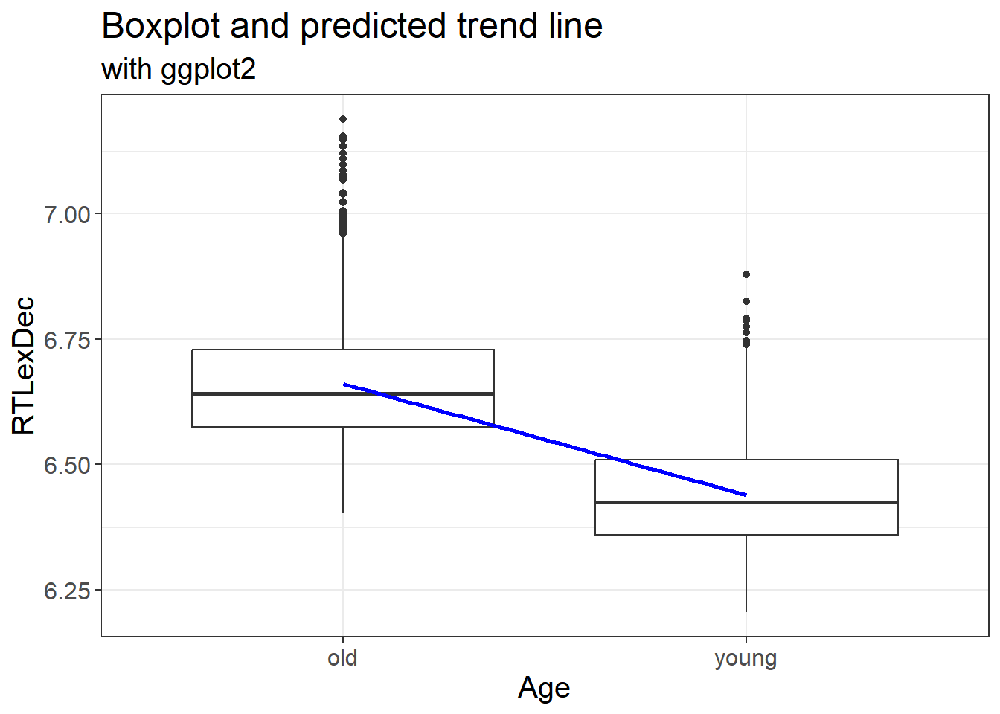
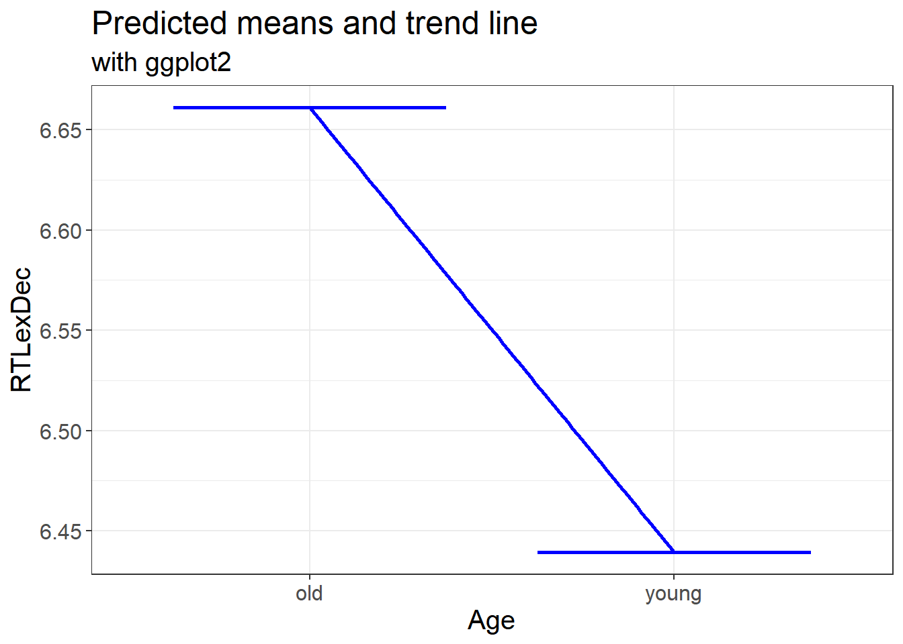
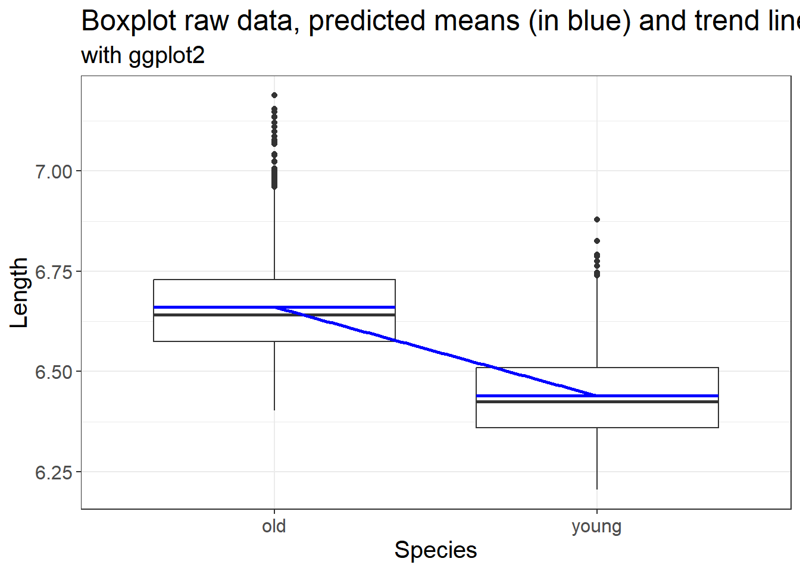
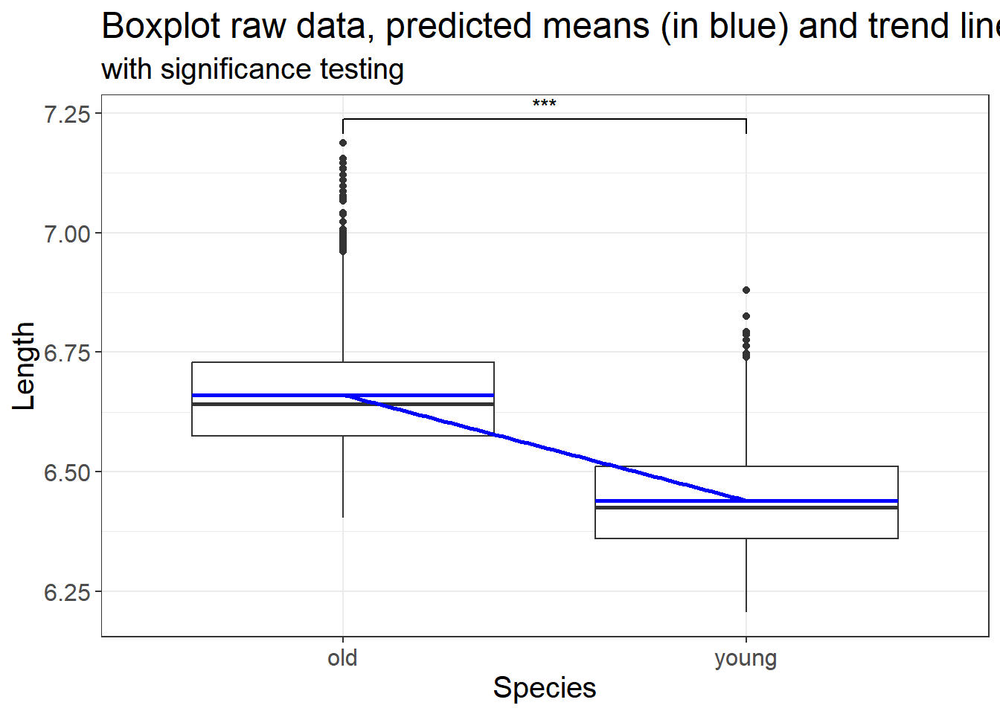

3.3 Linear Models
Up to now, we have looked at descriptive statistics, and evaluated summaries, correlations in the data (with p values).
We are now interested in looking at group differences.
3.3.1 Introduction
The basic assumption of a Linear model is to create a regression
analysis on the data. We have an outcome (or dependent variable) and a
predictor (or an independent variable). The formula of a linear model is
as follows outcome ~ predictor that can be read as “outcome as a
function of the predictor”. We can add “1” to specify an intercept, but
this is by default added to the model
3.3.1.1 Model estimation
english2 <- english %>%
mutate(AgeSubject = factor(AgeSubject, levels = c("young", "old")))
mdl.lm <- english2 %>%
lm(RTlexdec ~ AgeSubject, data = .)
#lm(RTlexdec ~ AgeSubject, data = english)
mdl.lm #also print(mdl.lm)##
## Call:
## lm(formula = RTlexdec ~ AgeSubject, data = .)
##
## Coefficients:
## (Intercept) AgeSubjectold
## 6.4392 0.2217##
## Call:
## lm(formula = RTlexdec ~ AgeSubject, data = .)
##
## Residuals:
## Min 1Q Median 3Q Max
## -0.25776 -0.08339 -0.01669 0.06921 0.52685
##
## Coefficients:
## Estimate Std. Error t value Pr(>|t|)
## (Intercept) 6.439237 0.002324 2771.03 <2e-16 ***
## AgeSubjectold 0.221721 0.003286 67.47 <2e-16 ***
## ---
## Signif. codes: 0 '***' 0.001 '**' 0.01 '*' 0.05 '.' 0.1 ' ' 1
##
## Residual standard error: 0.1111 on 4566 degrees of freedom
## Multiple R-squared: 0.4992, Adjusted R-squared: 0.4991
## F-statistic: 4552 on 1 and 4566 DF, p-value: < 2.2e-163.3.2 Role of coding schemes
3.3.2.1 Intro
There are other coding schemes that can be used. See Schad et al. (2020): “How to capitalize on a priori contrasts in linear (mixed) models: A tutorial”. Journal of Memory and Language,vol. 110, 104038.
We have:
- The treatment coding
- The contrast or sum coding
- The polynomial coding
- The Repeated coding
- The helmert coding
The first two are the most commonly used coding schemes, but see the paper for why one can use the others.
3.3.2.2 Treatment coding
By default, R uses a treatment coding scheme. By this we mean that the
intercept has the outcome of a specific level in the dataset (usually,
the first in alphabetical order, unless you have changed that!). In our
example above, we changed the reference level of the variable
AgeSubject to be “young” vs “old”. What we see as an result in our LM
is the intercept (=Young) vs “AgeSubjectold”. This will mean we are
looking at the difference between the reference level and all other
levels.
The code below allows you to see what the coding scheme is.
english2$AgeSubject2 <- english2$AgeSubject
contrasts(english2$AgeSubject2) <- contr.treatment(2)
contrasts(english2$AgeSubject2) ## 2
## young 0
## old 1mdl.lm.T <- english2 %>%
lm(RTlexdec ~ AgeSubject2, data = .)
#lm(RTlexdec ~ AgeSubject, data = english)
mdl.lm.T #also print(mdl.lm)##
## Call:
## lm(formula = RTlexdec ~ AgeSubject2, data = .)
##
## Coefficients:
## (Intercept) AgeSubject22
## 6.4392 0.2217##
## Call:
## lm(formula = RTlexdec ~ AgeSubject2, data = .)
##
## Residuals:
## Min 1Q Median 3Q Max
## -0.25776 -0.08339 -0.01669 0.06921 0.52685
##
## Coefficients:
## Estimate Std. Error t value Pr(>|t|)
## (Intercept) 6.439237 0.002324 2771.03 <2e-16 ***
## AgeSubject22 0.221721 0.003286 67.47 <2e-16 ***
## ---
## Signif. codes: 0 '***' 0.001 '**' 0.01 '*' 0.05 '.' 0.1 ' ' 1
##
## Residual standard error: 0.1111 on 4566 degrees of freedom
## Multiple R-squared: 0.4992, Adjusted R-squared: 0.4991
## F-statistic: 4552 on 1 and 4566 DF, p-value: < 2.2e-163.3.2.3 Contrast (or sum) coding
3.3.2.3.1 Default
Let’s change the coding scheme and see the difference in the output.
english2 <- english2 %>%
mutate(AgeSubject2 = factor(AgeSubject2, levels = c("old", "young")))
contrasts(english2$AgeSubject2) <- contr.sum(2)
contrasts(english2$AgeSubject2)## [,1]
## old 1
## young -1mdl.lm.C <- english2 %>%
lm(RTlexdec ~ AgeSubject2, data = .)
#lm(RTlexdec ~ AgeSubject, data = english)
mdl.lm.C #also print(mdl.lm)##
## Call:
## lm(formula = RTlexdec ~ AgeSubject2, data = .)
##
## Coefficients:
## (Intercept) AgeSubject21
## 6.5501 0.1109##
## Call:
## lm(formula = RTlexdec ~ AgeSubject2, data = .)
##
## Residuals:
## Min 1Q Median 3Q Max
## -0.25776 -0.08339 -0.01669 0.06921 0.52685
##
## Coefficients:
## Estimate Std. Error t value Pr(>|t|)
## (Intercept) 6.550097 0.001643 3986.29 <2e-16 ***
## AgeSubject21 0.110861 0.001643 67.47 <2e-16 ***
## ---
## Signif. codes: 0 '***' 0.001 '**' 0.01 '*' 0.05 '.' 0.1 ' ' 1
##
## Residual standard error: 0.1111 on 4566 degrees of freedom
## Multiple R-squared: 0.4992, Adjusted R-squared: 0.4991
## F-statistic: 4552 on 1 and 4566 DF, p-value: < 2.2e-16With contrast (or sum) coding, the intercept is almost the same as before (treatment = 6.439237 vs contrast = 6.550097). The intercept is now the average of all of the data points
## meanRTlexdec
## 1 6.550097
## 2 6.550097
## 3 6.550097
## 4 6.550097
## 5 6.550097
## 6 6.550097
## 7 6.550097
## 8 6.550097
## 9 6.550097
## 10 6.550097The coefficient for “old” is different. It is now nearly half of that in the treatment coding (0.221721 vs 0.110861). Why is this the case? In treatment coding, the distance between old and young was of 1 (1- 0 = 1), in contrast coding, it is of 2 (1 - -1 = 2). The coefficient of the intercept is exactly the same; for the second, it is half of the one above (0.221721 / 1 = 0.221721; 0.221721 / 2 = 0.110861)!
How to interpret the coefficient for the level “old”? It is the distance from the average!
Let’s change slightly the coding scheme
3.3.2.3.2 Modified
english2 <- english2 %>%
mutate(AgeSubject2 = factor(AgeSubject, levels = c("young", "old")))
contrasts(english2$AgeSubject2) <- c(-0.5, 0.5)
contrasts(english2$AgeSubject2)## [,1]
## young -0.5
## old 0.5mdl.lmC.2 <- english2 %>%
lm(RTlexdec ~ AgeSubject2, data = .)
#lm(RTlexdec ~ AgeSubject, data = english)
mdl.lmC.2 #also print(mdl.lmC.2)##
## Call:
## lm(formula = RTlexdec ~ AgeSubject2, data = .)
##
## Coefficients:
## (Intercept) AgeSubject21
## 6.5501 0.2217##
## Call:
## lm(formula = RTlexdec ~ AgeSubject2, data = .)
##
## Residuals:
## Min 1Q Median 3Q Max
## -0.25776 -0.08339 -0.01669 0.06921 0.52685
##
## Coefficients:
## Estimate Std. Error t value Pr(>|t|)
## (Intercept) 6.550097 0.001643 3986.29 <2e-16 ***
## AgeSubject21 0.221721 0.003286 67.47 <2e-16 ***
## ---
## Signif. codes: 0 '***' 0.001 '**' 0.01 '*' 0.05 '.' 0.1 ' ' 1
##
## Residual standard error: 0.1111 on 4566 degrees of freedom
## Multiple R-squared: 0.4992, Adjusted R-squared: 0.4991
## F-statistic: 4552 on 1 and 4566 DF, p-value: < 2.2e-16Our intercept is still the average of all datapoints of the dependent variable; that of “old” is now at 0.221721 as expected. The distance between young and old is of 1 (0.5 - -0.5 = 1).
When and why do we use the different coding schemes? We use it to make the intercept more interpretable. This is especially the case when having more than two categorical predictors, or interactions between a numeric and a categorical predictor. Read the paper and the Bodo Winter’s book for more details.
3.3.3 Further steps
3.3.3.1 Tidying the output
We use our original model with treatment coding.
# from library(broom)
tidy(mdl.lm) %>%
select(term, estimate) %>%
mutate(estimate = round(estimate, 3))## # A tibble: 2 × 2
## term estimate
## <chr> <dbl>
## 1 (Intercept) 6.44
## 2 AgeSubjectold 0.222Obtaining mean values from our model
## [1] 6.439237## [1] 6.6609583.3.3.2 Nice table of our model summary
We can also obtain a nice table of our model summary. We can use the
package knitr or xtable
3.3.3.2.1 Directly from model summary
| Estimate | Std. Error | t value | Pr(>|t|) | |
|---|---|---|---|---|
| (Intercept) | 6.439 | 0.002 | 2771.027 | 0 |
| AgeSubjectold | 0.222 | 0.003 | 67.468 | 0 |

3.3.3.3 Dissecting the model
Let us dissect the model. If you use “str”, you will be able to see what is available under our linear model. To access some info from the model
3.3.3.3.1 “str” and “coef”
## List of 13
## $ coefficients : Named num [1:2] 6.439 0.222
## ..- attr(*, "names")= chr [1:2] "(Intercept)" "AgeSubjectold"
## $ residuals : Named num [1:4568] 0.1045 -0.0416 -0.1343 -0.015 0.0114 ...
## ..- attr(*, "names")= chr [1:4568] "1" "2" "3" "4" ...
## $ effects : Named num [1:4568] -442.7013 7.4927 -0.1352 -0.0159 0.0105 ...
## ..- attr(*, "names")= chr [1:4568] "(Intercept)" "AgeSubjectold" "" "" ...
## $ rank : int 2
## $ fitted.values: Named num [1:4568] 6.44 6.44 6.44 6.44 6.44 ...
## ..- attr(*, "names")= chr [1:4568] "1" "2" "3" "4" ...
## $ assign : int [1:2] 0 1
## $ qr :List of 5
## ..$ qr : num [1:4568, 1:2] -67.587 0.0148 0.0148 0.0148 0.0148 ...
## .. ..- attr(*, "dimnames")=List of 2
## .. .. ..$ : chr [1:4568] "1" "2" "3" "4" ...
## .. .. ..$ : chr [1:2] "(Intercept)" "AgeSubjectold"
## .. ..- attr(*, "assign")= int [1:2] 0 1
## .. ..- attr(*, "contrasts")=List of 1
## .. .. ..$ AgeSubject: chr "contr.treatment"
## ..$ qraux: num [1:2] 1.01 1.01
## ..$ pivot: int [1:2] 1 2
## ..$ tol : num 1e-07
## ..$ rank : int 2
## ..- attr(*, "class")= chr "qr"
## $ df.residual : int 4566
## $ contrasts :List of 1
## ..$ AgeSubject: chr "contr.treatment"
## $ xlevels :List of 1
## ..$ AgeSubject: chr [1:2] "young" "old"
## $ call : language lm(formula = RTlexdec ~ AgeSubject, data = .)
## $ terms :Classes 'terms', 'formula' language RTlexdec ~ AgeSubject
## .. ..- attr(*, "variables")= language list(RTlexdec, AgeSubject)
## .. ..- attr(*, "factors")= int [1:2, 1] 0 1
## .. .. ..- attr(*, "dimnames")=List of 2
## .. .. .. ..$ : chr [1:2] "RTlexdec" "AgeSubject"
## .. .. .. ..$ : chr "AgeSubject"
## .. ..- attr(*, "term.labels")= chr "AgeSubject"
## .. ..- attr(*, "order")= int 1
## .. ..- attr(*, "intercept")= int 1
## .. ..- attr(*, "response")= int 1
## .. ..- attr(*, ".Environment")=<environment: 0x00000195b987c2d8>
## .. ..- attr(*, "predvars")= language list(RTlexdec, AgeSubject)
## .. ..- attr(*, "dataClasses")= Named chr [1:2] "numeric" "factor"
## .. .. ..- attr(*, "names")= chr [1:2] "RTlexdec" "AgeSubject"
## $ model :'data.frame': 4568 obs. of 2 variables:
## ..$ RTlexdec : num [1:4568] 6.54 6.4 6.3 6.42 6.45 ...
## ..$ AgeSubject: Factor w/ 2 levels "young","old": 1 1 1 1 1 1 1 1 1 1 ...
## ..- attr(*, "terms")=Classes 'terms', 'formula' language RTlexdec ~ AgeSubject
## .. .. ..- attr(*, "variables")= language list(RTlexdec, AgeSubject)
## .. .. ..- attr(*, "factors")= int [1:2, 1] 0 1
## .. .. .. ..- attr(*, "dimnames")=List of 2
## .. .. .. .. ..$ : chr [1:2] "RTlexdec" "AgeSubject"
## .. .. .. .. ..$ : chr "AgeSubject"
## .. .. ..- attr(*, "term.labels")= chr "AgeSubject"
## .. .. ..- attr(*, "order")= int 1
## .. .. ..- attr(*, "intercept")= int 1
## .. .. ..- attr(*, "response")= int 1
## .. .. ..- attr(*, ".Environment")=<environment: 0x00000195b987c2d8>
## .. .. ..- attr(*, "predvars")= language list(RTlexdec, AgeSubject)
## .. .. ..- attr(*, "dataClasses")= Named chr [1:2] "numeric" "factor"
## .. .. .. ..- attr(*, "names")= chr [1:2] "RTlexdec" "AgeSubject"
## - attr(*, "class")= chr "lm"## (Intercept) AgeSubjectold
## 6.4392366 0.22172153.3.3.3.2 “coef” and “coefficients”
What if I want to obtain the “Intercept”? Or the coefficient for distance? What if I want the full row for distance?
## (Intercept)
## 6.439237## AgeSubjectold
## 0.2217215## Estimate Std. Error t value Pr(>|t|)
## 0.22172146 0.00328631 67.46820211 0.00000000## [1] 03.3.3.3.3 Residuals
What about residuals (difference between the observed value and the estimated value of the quantity) and fitted values? This allows us to evaluate how normal our residuals are and how different they are from a normal distribution.
3.3.3.3.4 Goodness of fit?
## [1] -7110.962## [1] -7091.682## 'log Lik.' 3558.481 (df=3)Or use the following from broom
## # A tibble: 1 × 12
## r.squared adj.r.squared sigma statistic p.value df logLik AIC BIC
## <dbl> <dbl> <dbl> <dbl> <dbl> <dbl> <dbl> <dbl> <dbl>
## 1 0.499 0.499 0.111 4552. 0 1 3558. -7111. -7092.
## # ℹ 3 more variables: deviance <dbl>, df.residual <int>, nobs <int>3.3.3.3.5 Significance testing
Are the above informative? of course not directly. If we want to test for overall significance of model. We run a null model (aka intercept only) and compare models.
mdl.lm.Null <- english %>%
lm(RTlexdec ~ 1, data = .)
mdl.comp <- anova(mdl.lm.Null, mdl.lm)
mdl.comp## Analysis of Variance Table
##
## Model 1: RTlexdec ~ 1
## Model 2: RTlexdec ~ AgeSubject
## Res.Df RSS Df Sum of Sq F Pr(>F)
## 1 4567 112.456
## 2 4566 56.314 1 56.141 4552 < 2.2e-16 ***
## ---
## Signif. codes: 0 '***' 0.001 '**' 0.01 '*' 0.05 '.' 0.1 ' ' 1The results show that adding the variable “AgeSubject” improves the model fit. We can write this as follows: Model comparison showed that the addition of AgeSubject improved the model fit when compared with an intercept only model (\(F\)(1) = 4551.96, p < 0) (F(1) = 4552 , p < 2.2e-16)
3.3.4 Plotting fitted values
3.3.4.1 Trend line
Let’s plot our fitted values but only for the trend line
english %>%
ggplot(aes(x = AgeSubject, y = RTlexdec))+
geom_boxplot()+
theme_bw() + theme(text = element_text(size = 15))+
geom_smooth(aes(x = as.numeric(AgeSubject), y = predict(mdl.lm)), method = "lm", color = "blue") +
labs(x = "Age", y = "RTLexDec", title = "Boxplot and predicted trend line", subtitle = "with ggplot2") 
This allows us to plot the fitted values from our model with the predicted linear trend. This is exactly the same as our original data.
3.3.4.2 Predicted means and the trend line
We can also plot the predicted means and linear trend
english %>%
ggplot(aes(x = AgeSubject, y = predict(mdl.lm)))+
geom_boxplot(color = "blue") +
theme_bw() + theme(text = element_text(size = 15)) +
geom_smooth(aes(x = as.numeric(AgeSubject), y = predict(mdl.lm)), method = "lm", color = "blue") +
labs(x = "Age", y = "RTLexDec", title = "Predicted means and trend line", subtitle = "with ggplot2") 
3.3.4.3 Raw data, predicted means and the trend line
We can also plot the actual data, the predicted means and linear trend
english %>%
ggplot(aes(x = AgeSubject, y = RTlexdec))+
geom_boxplot() +
geom_boxplot(aes(x = AgeSubject, y = predict(mdl.lm)), color = "blue") +
theme_bw() + theme(text = element_text(size = 15)) +
geom_smooth(aes(x = as.numeric(AgeSubject), y = predict(mdl.lm)), method = "lm", color = "blue") +
labs(x = "Species", y = "Length", title = "Boxplot raw data, predicted means (in blue) and trend line", subtitle = "with ggplot2")
3.3.4.4 Add significance levels and trend line on a plot?
We can use the p values generated from either our linear model to add significance levels on a plot. We use the code from above and add the significance level. We also add a trend line
english %>%
ggplot(aes(x = AgeSubject, y = RTlexdec))+
geom_boxplot() +
geom_boxplot(aes(x = AgeSubject, y = predict(mdl.lm)), color = "blue") +
theme_bw() + theme(text = element_text(size = 15)) +
geom_smooth(aes(x = as.numeric(AgeSubject), y = predict(mdl.lm)), method = "lm", color = "blue") +
labs(x = "Species", y = "Length", title = "Boxplot raw data, predicted means (in blue) and trend line", subtitle = "with significance testing") +
geom_signif(comparison = list(c("old", "young")),
map_signif_level = TRUE, test = function(a, b) {
list(p.value = summary(mdl.lm)$coefficients[2, 4])})
3.3.5 What about pairwise comparison?
When having three of more levels in our predictor, we can use pairwise comparisons, with corrections to evaluate differences between each level.
##
## Call:
## lm(formula = RTlexdec ~ AgeSubject, data = .)
##
## Residuals:
## Min 1Q Median 3Q Max
## -0.25776 -0.08339 -0.01669 0.06921 0.52685
##
## Coefficients:
## Estimate Std. Error t value Pr(>|t|)
## (Intercept) 6.439237 0.002324 2771.03 <2e-16 ***
## AgeSubjectold 0.221721 0.003286 67.47 <2e-16 ***
## ---
## Signif. codes: 0 '***' 0.001 '**' 0.01 '*' 0.05 '.' 0.1 ' ' 1
##
## Residual standard error: 0.1111 on 4566 degrees of freedom
## Multiple R-squared: 0.4992, Adjusted R-squared: 0.4991
## F-statistic: 4552 on 1 and 4566 DF, p-value: < 2.2e-16## $emmeans
## AgeSubject emmean SE df lower.CL upper.CL
## young 6.439 0.00232 4566 6.435 6.444
## old 6.661 0.00232 4566 6.656 6.666
##
## Confidence level used: 0.95
##
## $contrasts
## contrast estimate SE df t.ratio p.value
## young - old -0.222 0.00329 4566 -67.468 <.0001How to interpret the output? Discuss with your neighbour and share with the group.
Hint… Look at the emmeans values for each level of our factor “Species” and the contrasts.
3.3.6 Multiple predictors?
Linear models require a numeric outcome, but the predictor can be either numeric or a factor. We can have more than one predictor. The only issue is that this complicates the interpretation of results
##
## Call:
## lm(formula = RTlexdec ~ AgeSubject * WordCategory, data = .)
##
## Residuals:
## Min 1Q Median 3Q Max
## -0.25079 -0.08273 -0.01516 0.06940 0.52285
##
## Coefficients:
## Estimate Std. Error t value Pr(>|t|)
## (Intercept) 6.664955 0.002911 2289.950 <2e-16 ***
## AgeSubjectyoung -0.220395 0.004116 -53.545 <2e-16 ***
## WordCategoryV -0.010972 0.004822 -2.275 0.0229 *
## AgeSubjectyoung:WordCategoryV -0.003642 0.006820 -0.534 0.5934
## ---
## Signif. codes: 0 '***' 0.001 '**' 0.01 '*' 0.05 '.' 0.1 ' ' 1
##
## Residual standard error: 0.1109 on 4564 degrees of freedom
## Multiple R-squared: 0.5008, Adjusted R-squared: 0.5005
## F-statistic: 1526 on 3 and 4564 DF, p-value: < 2.2e-16And with an Anova
## Analysis of Variance Table
##
## Response: RTlexdec
## Df Sum Sq Mean Sq F value Pr(>F)
## AgeSubject 1 56.141 56.141 4564.2810 < 2.2e-16 ***
## WordCategory 1 0.173 0.173 14.0756 0.0001778 ***
## AgeSubject:WordCategory 1 0.004 0.004 0.2851 0.5933724
## Residuals 4564 56.138 0.012
## ---
## Signif. codes: 0 '***' 0.001 '**' 0.01 '*' 0.05 '.' 0.1 ' ' 1The results above tell us that all predictors used are significantly different.